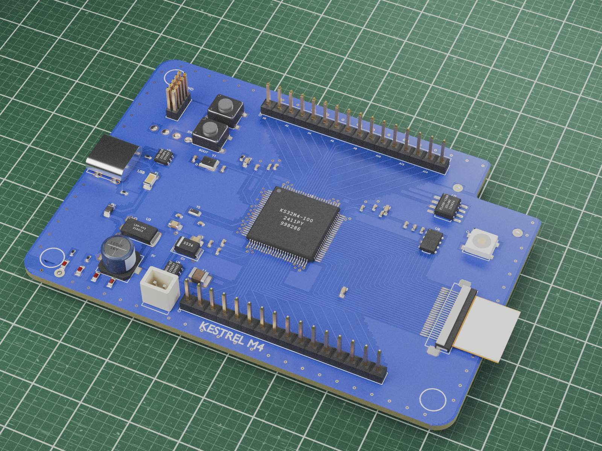

J1start
Muhammad Saad
I build Blender tools for electronics visuals. My main project, CircuitKit PCB Boards, turns PCB design files into detailed 3D boards and gives you a studio to present them.

U1main project
CircuitKit PCB Boards
A Blender add-on. Pick a board file, press Import, and CircuitKit builds a real 3D board from the design. Then it gives you the tools to present it: a render studio, looks, camera poses, an exploded view and callouts.
| Formats read directly | 12KiCad, Gerber, IPC-2581, ODB++, Altium, EasyEDA, Eagle XML, PADS and more |
|---|---|
| Render studio | 7camera presets |
| Looks | 9one click each |
| Camera poses | 10named poses and a pose sheet |
| Presentation | Exploded view, callouts and a parts list |
| Parts library | about 350parts |
| PC hardware kit | 75part families, 427variants |
| Export | GLB and USDZ |
What one import builds
- Board outline
- Cutouts
- Drilled and plated holes
- Top, bottom and inner copper
- Traces
- Filled zones
- Pads
- Vias
- Silkscreen
- Part bodies with solder fillets




All boards shown are original sample and ready boards made for CircuitKit. Click any image to enlarge.

U2camera poses
Ten poses, one pose sheet
Pick a named pose and Aim Camera frames the whole scene from that angle, keeps the board sharp and turns the studio lights with the camera. Render Pose Sheet renders the poses you tick, one PNG each, plus a labeled contact sheet.
- top-down flat-lay
- 3/4 left
- 3/4 right
- low hero
- side profile
- end-on
- underside
- close-up corner
- high orbit
- overhead tilt

U3looks
Same board, new look
A nine-second loop of the Skylark board in five of the nine looks: Realistic, Cyberpunk neon, Blueprint, Holographic and Retro gold. The board geometry stays the same; only the materials change.
J2workflow
From board file to render in three steps
Import
Choose your board file from File > Import or the Start here box. CircuitKit picks the right reader for the format.

Style
Apply a look with one click, then pick a camera pose and press Aim Camera.

Render
Render and save a single shot, or render a full pose sheet in one go.

Frames from screen recordings of the add-on running in Blender 5.1.2.
J3video
CircuitKit in 36 seconds
Import, looks, exploded view and callouts, camera poses, the pose sheet and a PC scene, recorded in the add-on.
TP1notes
Requirements
Blender 4.2 LTS to 5.2, tested on Windows 11 only (macOS and Linux have not been tested). KiCad is not needed to import. The add-on never goes online.
| 4.4.0 | Start here box, sample boards, short guides, plain-language import hints. |
| One File > Import entry plus a submenu of 10 specific importers, 12 directly read formats, Auto-detect, Reload and Live Sync for every route, millimeter scenes on fresh imports. | |
| Camera Poses: ten named camera angles that fit the whole scene, lights that follow the camera, Show Underside, and Render Pose Sheet. | |
| Product Shot, callouts and bill of materials legend, proof sheet, title-card film. | |
| Part assembly animation, cable runs, standoffs and screws, teaching mode. | |
| Baked GLB and USDZ export, STEP export through KiCad. | |
| Flex fold animation, PC hardware kit, signal flow and growth effects, 9 looks, parts library. | |
| Much faster and lighter imports of large boards. | |
| Lite editions. | |
| Fix: Altium boards with an unusual region stream no longer produce corrupt geometry. |
Testing note
All checks were run by script. Nobody has clicked through the panels and menus by hand yet, so if something misbehaves, I want to hear about it.
U4more work
Softbox Lab: studio lighting built in Blender
A lighting pack I built in Blender: 30 studio HDRIs rendered from virtual softboxes, strip lights, beauty dishes, a ring light and color gels, plus 40 gobo masks and 5 editable light rigs. Same product, same camera; only the lighting changes. Not yet released.


Fig. 15Softbox Lab, color gel duo HDRI on a sample product scene.
R1about
Hi, I'm Saad
I'm Muhammad Saad, an electrical engineering student at the University of Waterloo. My home is in Calgary, Alberta. I build Blender tools that turn electronics design files into clean 3D visuals, so a board can be shown the way it will look before it is made.
CircuitKit PCB Boards is my main project: importers for each PCB format, board and part builders, a render studio, looks and a camera pose system, all checked by automated tests against hundreds of real boards.
What I work with
- Python and the Blender API (add-ons, operators, panels)
- Cycles and EEVEE rendering, lighting and materials
- Procedural modeling of boards and parts
- PCB file formats: KiCad, Gerber and Excellon, IPC-2581, ODB++
- Automated testing across Blender 4.2 LTS to 5.2
J4contact